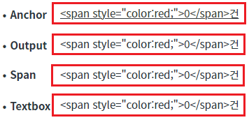
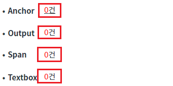
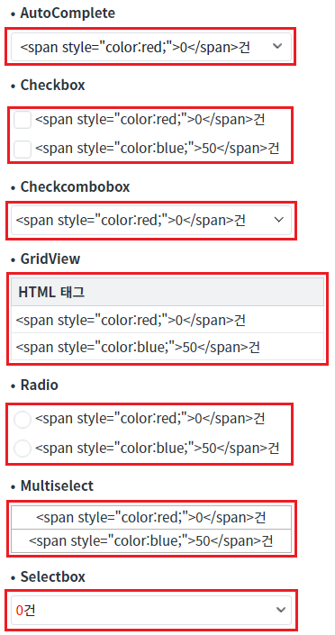
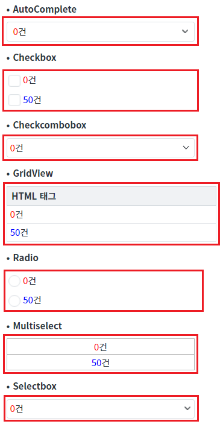
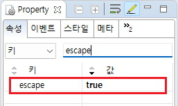

출력용 컴포넌트의 속성 'escape' 적용 예시입니다. 속성 'escape'는 출력할 문자열(value)에 <>&"이 포함되어 있으면 HTML Escape 문자로 변환하여 화면에 표시할지의 여부를 지정할 수 있습니다. 일반적으로 화면에서 직접 'value'를 할당하여 HTML 태그를 사용고자 할 때 설정 값을 'false'로 지정합니다.
속성 'escape'를 'false'로 설정한 후 출력할 문자열에 '<script>'와 같이 실행 가능한 태그가 포함되어 있다면 실행될 수 있습니다. 해당 상황은 해킹으로 인해 서버(네트워크)에서 받은 데이터가 위변조된 경우에 발생하기도 합니다.
이를 방지하기 위해 속성 'escapeFormatter'를 사용하여 문자열을 검사하거나, 서버에서 받은 데이터를 화면에 전달하기 전에 공통 모듈에서 데이터를 검수합니다.
다음은 속성 'escape'를 지원하는 컴포넌트 목록입니다.
Anchor
AutoComplete
Checkbox
Checkcombobox
GridView
Input
Multiselect
Output
Radio
Selectbox
Span
Textbox
속성 escape 사용 - 단건 출력 컴포넌트
속성 escape 미사용 - 단건 출력 컴포넌트
속성 escape 사용 - 다건 출력 컴포넌트
속성 escape 미사용 - 다건 출력 컴포넌트
STEP 1. 실행된 결과를 확인합니다.
화면의 영역 '(기본 설정) escape 사용 - 단건 출력 컴포넌트'에 구성된 컴포넌트를 확인합니다.
HTML 태그가 문자열로 출력됩니다.
그림 1.브라우저(Chrome) 실행 예시

STEP 1. 실행된 결과를 확인합니다.
화면의 영역 'escape 미사용 - 단건 출력 컴포넌트'에 구성된 컴포넌트를 확인합니다.
HTML 태그로 출력됩니다.
그림 2.브라우저(Chrome) 실행 예시

STEP 1. 실행된 결과를 확인합니다.
화면의 영역 '(기본 설정) escape 사용 - 다건 출력 컴포넌트'에 구성된 컴포넌트를 확인합니다.
HTML 태그가 문자열로 출력됩니다.
그림 3.브라우저(Chrome) 실행 예시

STEP 1. 실행된 결과를 확인합니다.
화면의 영역 'escape 미사용 - 다건 출력 컴포넌트'에 구성된 컴포넌트를 확인합니다.
HTML 태그로 출력됩니다.
그림 4.브라우저(Chrome) 실행 예시

STEP 1. 컴포넌트의 속성을 지정합니다.
[필수] escape // [default: "true", "false"]
예시 1) escape 사용
escape="true"
예시 2) escape 미사용
escape="false"
그림 5.웹스퀘어5 SP5 스튜디오의 Property View(속성창) 예시

[소스 코드 예시]
<!-- Anchor 컴포넌트의 escape 사용 예시입니다. --> <w2:anchor escape="true"> </w2:anchor>
escape
[웹스퀘어5 SP5 개발 가이드] escape 설정
링크 : https://docs1.inswave.com/sp5_user_guide/1cb18225e88f1374